Plugin Version:
3.5.3 | Release Notes
Plugin Version:
3.5.3 | Release Notes
Overview
The Simple Reports plugin is an extension that generates reports from the data in report tables and viewed inside the ProcessMaker interface under the Case menu.
Requirements
ProcessMaker Versions
- ProcessMaker v. 3.1 or later
Supported Browsers
Supported Stacks
Installation and Configuration
Log on with a user, such as "admin," who has the PM_SETUP_ADVANCE permission in their role, and then go to ADMIN > Plugins > Enterprise Manager. In the next graphic, do one of the following:
- Install the Simple Report plugin by clicking on
 Install from File and uploading the plugin file.
Install from File and uploading the plugin file. - Click on the Simple Report plugin's Install Now button in the list of available plugins.
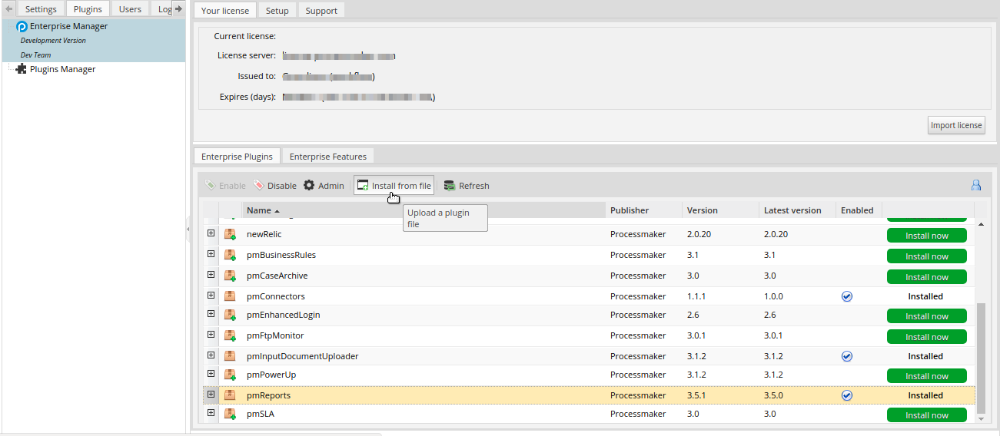
After installing the plugin, make sure that the Simple Report plugin is enabled  . If the plugin is not enabled, click the Enable button, as shown in the graphic below.
. If the plugin is not enabled, click the Enable button, as shown in the graphic below.
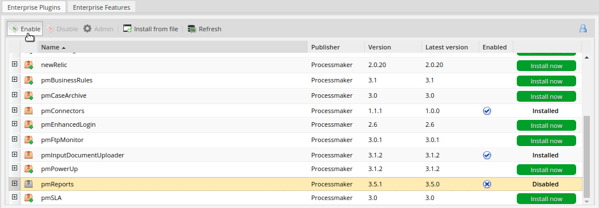
Simple Reports Option
After the plugin is enabled, an option named Reports is added under the Home panel as shown in the graphic below.
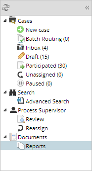
Note that the Reports option does NOT display any reports if the user does not have the simple report permission.
Creating a Simple Report
A simple report is created by converting a report table.
To create a simple report, follow these steps:
- Create a report table by opening a process and then clicking the Report Tables option in the Process Objects toolbox. A new window displays to create the report table as seen in the graphic below.
- Define the table name, description, and columns that will
be part of the report table and then click Create.
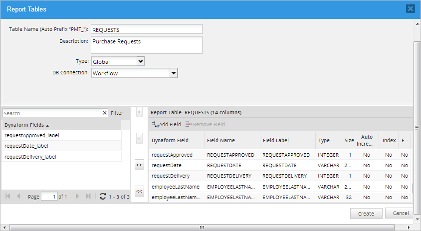
The report table is listed in the Report Tables window.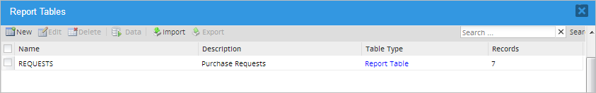
- To convert the created report table into a simple report, right-click on the report table line and then select the Convert to Simple Report option as seen in the graphic below.
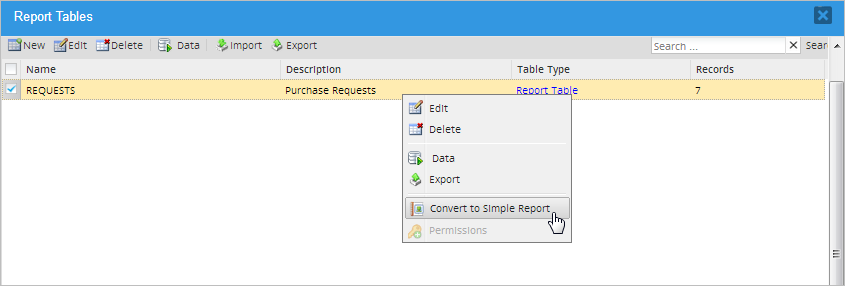
A green "Simple Report" label is added to the report table's description, showing that the report table is now a simple report.
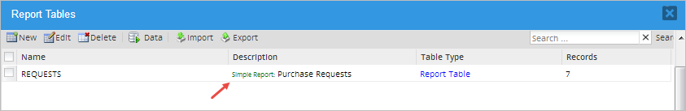
A simple report can be turned back to a report table by right-clicking the report line and then selecting the Convert to Native Report Table option.

Setting Up Permissions
A simple report is only available as long as the proper permissions are given to a specific department, user, group, or all users. By default, simple reports are not available to any user.
To set up permissions, follow these steps:
- After the simple report is created, right click on it and choose the Permissions option.
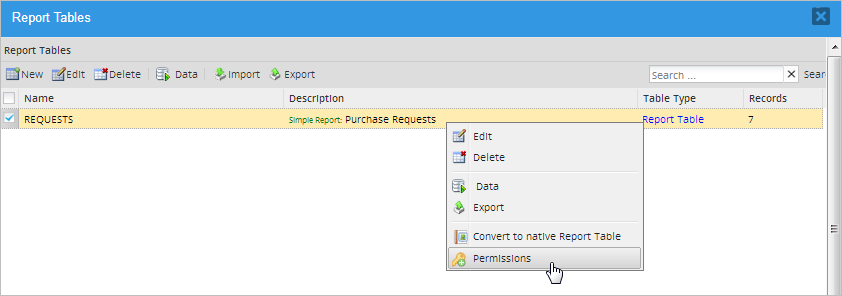
A new window opens with the following options as noted in the graphic below:- New: Create a new permission.
- Edit: Edits an existing permission.
- Status: Toggle whether the permission is activate or inactive. It means if the permissions assigned to the Simple Report are applied or not. Note that the status can be changed only if there is more than one permission set.
- Delete: Delete a permission. To delete a permission, more than one permission must be set.

- Create a permission by clicking on the New button in the menu. The Add Permission screen displays within the Report Tables window.
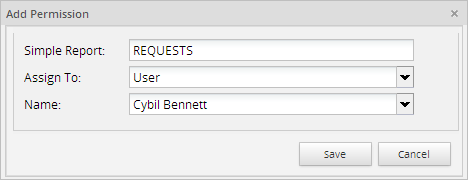
Fill out the following information:
- Simple Report: Enter the name of the simple report.
- Assign To: Select one of the following options to specify the scope of the permission to access the report:
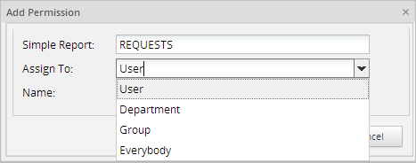
- User: Select to indicate a single user can access the report. Select the name of the user that will have access to the report in the Name field. Note that the Name field only lists users created in the current workspace.
- Department: Select to indicate a department can access the report. Select the name of the department that will have access to the report in the Name field. Note that the Name field only lists departments created in the current workspace.
- Group: Select to indicate a group can access the report. Select the name of the group that will have access to the report in the Name field. Note that the Name field only lists groups created in the current workspace.
- Everybody: Select to indicate all users in the current workspace can access the simple report.
- Click the Save button. The permission is listed in the Report Tables window.

The Report Tables window provides the following information about permissions:
- Assigned to: Shows to which user, department, or group has the permission aplies.
- Create: Shows the creation date of the permission.
- Update: Shows the date of the permission modification.
- Status: Shows if the permission is Active or Inactive.
Use the Back button to return to the Report Tables window.
Note: If a ProcessMaker process is exported to another ProcessMaker installation, tables and report tables are not exported. Therefore, permissions given to simple reports will no longer be available.
Setting Up Filters
Filters can be set to more than one field to target more specific search results. These filters are only available after the plugin is enabled.
Follow these steps to set up a filter:
- Edit the report table that was turned into a simple report
either by doing one of the following:
- Go to the Report Tables option inside the process designer.
- Go to Admin > Settings > PM Tables, and then
click the Edit button.
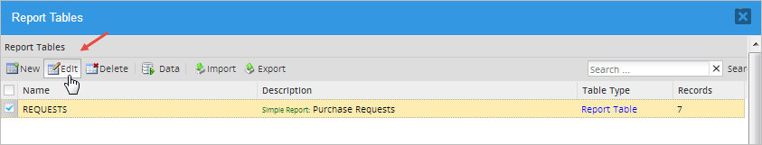
- Set a filter to a field by double-clicking on the field row and then checking the box that is displayed in the Filter column.
- Click on the Update button to save the changes.
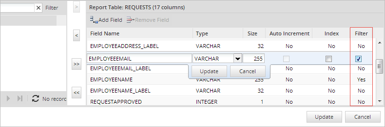
The row value of the Filter column changes to "Yes". In this example, the user is able to configure filters in the "EMPLOYEEEMAIL" and "EMPLOYEENAME" fields.

Checking the Simple Report
Remember that to see the data in a simple report, the report table must have at least one case record. In other words, at least one case must have been started.
To see the simple report, go to Home > Documents > Reports. The Simple Report interface is displayed where each simple report is displayed in a tab.

The Reports panel has the following options:
- Export Page To Excel File: Exports the current page to an Excel file.
- Export All to Excel File: If there is more than one page, all pages are exported to an Excel file.
- Export Page to CSV File: Exports the current page to an Excel file with the .csv format (usually used with tabular data separating the values with a comma).
- Export All to CSV File: If more than one page is found in this section, this option exports all pages to an Excel file with the .csv format.
- Filter By: Applies a filter to the fields configured in the Report Table.
- Filter Reset: Clears any filter applied and shows the initial configuration of the list.
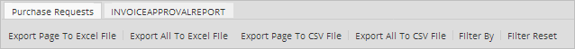
For example, click the Export Page To Excel File button, and the Excel document is downloaded automatically. Open the .xls file with an Excel editor to see the data contained in the simple report.
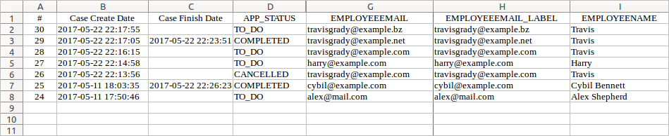
Applying Filters
Filters can be used to narrow the data displayed by the simple report. These filters support two wildcard operators in conjunction with the LIKE and NOT LIKE operators, the underscore (_), and the percent symbol ( %).
| Wildcards | |
|---|---|
| Percent Symbol (%) | Matches one or more characters. |
| The underscore (_) | Matches one character. |
See some examples of LIKE, NOT LIKE, and EQUAL AND NOT EQUAL TO using the word "example" in the following tables:
| LIKE | |
|---|---|
| % at the beginning | LIKE %mple |
| % at the end | LIKE exam% |
| % in the middle of the string | LIKE 'e%xample' |
| % at the beginning and end | LIKE %xampl% |
| _ any coincidence | LIKE e_____e |
| A combination | LIKE 'e_%_%' |
| NOT LIKE | |
|---|---|
| % at the beginning | NOT LIKE %xample |
| % at the end | NOT LIKE exampl% |
| % at the beginning and at the end | NOT LIKE %xampl% |
| _ any coincidence | NOT LIKE e_____e |
| A combination | NOT LIKE 'e_%__%' |
The equal (=) and not equal (!=) operators can be used as well with strings and/or numbers.
| EQUAL AND NOT EQUAL | |
|---|---|
| String | = example != example |
| Numbers | = 1 != 1 |
For example, configure a filter to narrow the records that are displayed in the simple report by clicking the Filter By option.
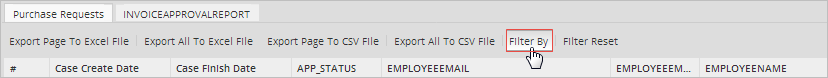
In the Filters window, the fields in the report table that were configured in the search criteria will display. A logical operator, such as LIKE, NOT LIKE, = or !=, and a criterion can be applied to each one of these fields.
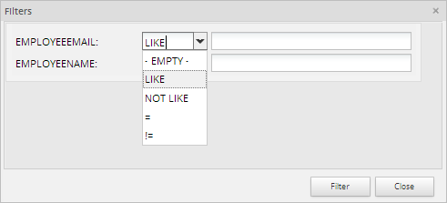
In this example, the "EMPLOYEEEMAIL" and "EMPLOYEENAME" fields were configured in the report table, and the LIKE operator was selected along with the "travisgrady%" as criteria to display only the records that contain an employee email that starts with "travisgrady".
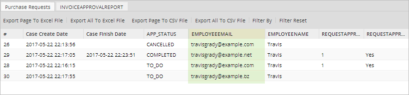
Remember that it is possible to filter by more than two fields if a result needs to be more precise.